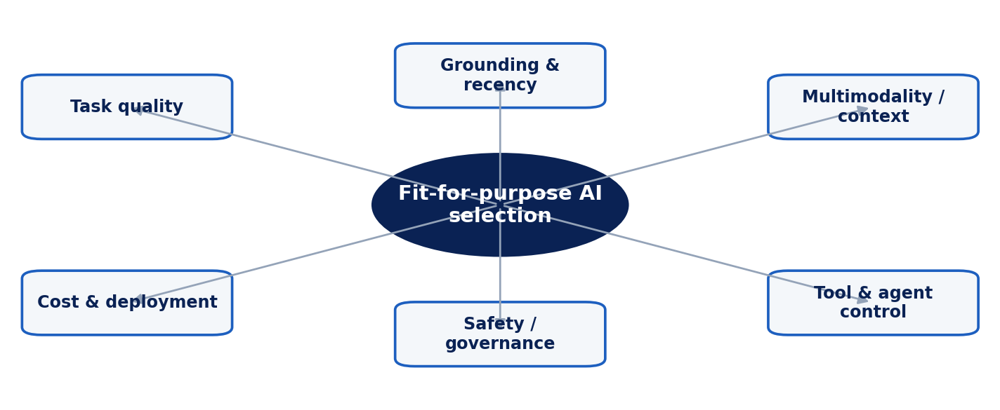

CHIATECH JOURNAL
SETEHEM · VOLUME 1 · ISSUE 1 · JULY 2026 · e010
PIONEER PUBLICATION · ACCEPTED ARTICLE · CRITICAL COMPARATIVE REVIEW ARTICLE · ARTIFICIAL INTELLIGENCE · EDUCATION TECHNOLOGY · MANAGEMENT
Selecting Generative AI Systems for Education and Business in 2026: A Capability–Risk Framework for Comparing Frontier and Open-Weight Model Ecosystems
CHIA Shiaondo Kenneth
CHIATECH Solutions and Resources Ltd, Abuja, Nigeria
ORCID: 0009-0009-6434-4586 · Correspondence: chiakenneth01@gmail.com
Article | Volume/Issue | Publication | ISSN | DOI |
|---|---|---|---|---|
e010 | 1(1) | Pioneer Issue · August 2026 | Pending assignment | Pending registration |
Abstract
Background: Generative AI procurement is increasingly difficult because model capability, tool access, multimodality, deployment control, safety controls and pricing evolve faster than conventional technology-selection cycles. Objective: This article constructs a five-system comparison time-stamped, evidence-disciplined framework for selecting generative AI systems in education and business. Methods: A critical comparative review triangulated independent evaluation scholarship with official model and system documentation available through 29 August 2026. The review considers GPT-5.6 Sol, Claude Opus 5, Gemini 3.1 Pro, DeepSeek-V4-Pro and Llama 4 Maverick as representative ecosystems rather than treating vendor benchmark claims as directly commensurable scores. Results: The comparison shows persistent trade-offs. Closed frontier systems provide strong managed capabilities and integrated tools but create dependence on provider controls, pricing and service architecture. Open-weight models provide greater deployment and adaptation control but shift security, evaluation and governance burdens to the adopter. Multimodality, context length and agent functionality are increasingly common, making grounding quality, workflow control, data governance, evaluation discipline and total cost of ownership more discriminating than a single benchmark rank. Conclusion: Organizations should replace model leaderboards with use-case portfolios, risk tiers and repeatable local evaluations. The best system is the one that achieves acceptable task quality under the institution’s evidence, privacy, safety, latency, cost and audit requirements.
Keywords: generative AI; large language models; AI evaluation; education technology; enterprise AI; AI governance; model selection
1. Introduction
Different AI systems exhibit different strengths, and institutional users need a way to compare them. Its numerical 0–100 matrix, however, mixed model generations and assigned scores that were not traceable to a reproducible common benchmark. That limitation is especially consequential in 2026, when frontier models and their surrounding tool ecosystems change within weeks. A defensible comparison must therefore be time-stamped, source-aware and resistant to the false precision of a single overall score.
Independent work on holistic language-model evaluation reinforces this position. HELM demonstrated that model comparison becomes meaningful only when scenarios, metrics and conditions are standardized, while arena-style human-preference evaluations show that perceived quality varies by task and user context. For institutional adoption, NIST's Generative AI Profile adds a second requirement: capability must be evaluated together with risks such as confabulation, privacy, information security, harmful bias, intellectual-property exposure and over-reliance (Autio et al., 2024; Bommasani et al., 2023).
This article therefore asks a more useful question than 'Which model is best?': which model ecosystem is fit for a specified educational or business workflow, under a specified risk tolerance and governance regime? The contribution is a capability–risk framework that separates documented technical affordances from institution-specific value judgments.
2. Review Design and Comparison Logic
The study uses a critical comparative review rather than a synthetic benchmark. Five ecosystems were selected because, as of 29 August 2026, they represented materially different deployment choices: OpenAI GPT-5.6 Sol, Anthropic Claude Opus 5, Google Gemini 3.1 Pro, DeepSeek-V4-Pro and Meta Llama 4 Maverick. Official documentation was used to establish current product characteristics; independent evaluation and risk-management literature was used to determine how such claims should be interpreted. Vendor-reported benchmark scores were not pooled because test sets, tool permissions, inference effort, prompting, software harnesses and reporting conventions are not equivalent.
Seven decision dimensions were retained or expanded from the source manuscript: task quality, factual grounding and recency, multimodal/context handling, coding and tool use, deployment control, safety/governance, and implementation economics. The framework does not assume that every organization values these dimensions equally. A university assessment office may weight privacy, citation traceability and academic-integrity controls heavily, while a software team may emphasize agent reliability, repository-scale context and tool execution.

Figure 1. Capability–risk framework for fit-for-purpose generative AI selection.
3. The August 2026 Model Landscape
OpenAI's August 2026 documentation describes GPT-5.6 Sol as an updated ChatGPT model tuned for more focused answers, improved factual reliability and consistency. For institutional users, the important characteristic is not a universal quality claim but access to a tightly managed platform in which model behavior, tool access and safety policies are centrally updated. This can reduce local maintenance while increasing dependency on provider-side changes.
Anthropic introduced Claude Opus 5 in July 2026 with emphasis on coding, professional work and long-running agents. Google’s February 2026 Gemini 3.1 Pro model card describes a natively multimodal reasoning system able to process text, audio, images, video and large code/data contexts. DeepSeek’s August 2026 V4-Pro release emphasizes agent capability and Responses-API compatibility. Meta’s Llama 4 Maverick remains a materially different option because its open-weight availability supports self-hosting, customization and infrastructure control, although those advantages transfer more responsibility for model serving, red teaming, access control and monitoring to the adopter.
4. A Capability–Risk Comparison for Institutional Use
Table 1. Selecting Generative AI Systems for Education and Business in 2026: analytical matrix.
Ecosystem | Documented 2026/25 characteristics | Institutional selection implication |
|---|---|---|
GPT-5.6 Sol | Managed frontier ChatGPT ecosystem; August 2026 update emphasizes focus, factual reliability and consistency. | Strong managed workflow option; test dependence on provider tools, policies, data handling and update cadence. |
Claude Opus 5 | July 2026 Opus model positioned for coding, professional work and long-running agents. | Attractive for agentic/professional workflows; evaluate domain accuracy, tool permissions, cost and audit requirements. |
Gemini 3.1 Pro | Natively multimodal reasoning; text, audio, image, video and large code/data contexts. | Useful where multimodal evidence and large-context analysis are central; validate grounding and workflow integration. |
DeepSeek-V4-Pro | August 2026 GA; enhanced agent capabilities and Responses-API compatibility. | Potentially strong agent/developer option; independently validate security, reliability, hosting and governance assumptions. |
Llama 4 Maverick | Open-weight natively multimodal MoE model; 17B active parameters, 128 experts, 400B total. | Greater customization and deployment control; adopter carries larger serving, security, evaluation and monitoring burden. |
5. Implications for Education
Educational use should be organized by learning function rather than by model brand. Low-risk uses include brainstorming, practice-question variation and language support when outputs are reviewed. Medium-risk uses include formative feedback, tutoring and coding assistance, where incorrect explanations can shape student understanding. High-risk uses include grading, progression decisions, admissions, disability accommodation, disciplinary decisions and research-integrity judgments; these require much stronger validation, auditability and human accountability.
The source manuscript treated plagiarism detection as a model capability. That framing is not reliable enough for high-stakes academic integrity. Generative models can support evidence gathering or text comparison, but institutions should not infer misconduct from an opaque model judgment. A defensible workflow separates content provenance, assessment design, process evidence and human review from AI-assisted signals.
6. Implications for Business and Multi-System Orchestration
Business adoption increasingly resembles portfolio management. A firm may use a managed frontier model for sensitive reasoning workflows, a multimodal model for document and media analysis, and an open-weight model for local or latency-sensitive applications. Multi-system orchestration can reduce dependence on a single vendor, but it also increases integration, evaluation and incident-response complexity. Routing logic must therefore be observable: the organization should know which model handled a task, which evidence and tools were available, what data were transmitted, and what validation occurred before an output affected operations.
The decisive metric is total workflow performance, not model reputation. A slightly weaker model that is grounded in authoritative data, restricted to appropriate tools and embedded in a robust verification process may outperform a nominally stronger model used without controls. Local acceptance tests should include representative prompts, adversarial cases, domain-specific factual checks, cost/latency measurement and failure-mode documentation.
7. Limitations and Research Agenda
This is a time-stamped comparison of rapidly changing systems. Product characteristics, prices, interfaces and safety mitigations can change after publication. Official model cards also describe providers’ own evaluations and should not be treated as independent proof of superiority. Future research should build reproducible cross-model evaluations using identical prompts, tool permissions and time-bounded knowledge sources, with separate reporting for capability, calibration, robustness, safety and cost.
8. Institutional Adoption Protocol and Decision Record
A defensible adoption process begins by defining the decision before testing models. The institution should identify the users, task, data sensitivity, expected output, acceptable failure modes, required evidence, tool permissions and the person who remains accountable for the result. This prevents evaluations from drifting toward generic demonstrations that favor fluent systems but do not represent the real workflow.
The second step is to build a local evaluation set. Education providers can sample authentic but appropriately de-identified tutoring, feedback, curriculum and administrative tasks; businesses can sample representative documents, customer cases, code changes or analysis problems. Each item should have a scoring rubric and, where factuality matters, an authoritative reference answer or source set. Sensitive production data should not be used in external services until contractual and technical controls have been reviewed.
The third step is to test the complete system rather than the base model in isolation. Where retrieval, code execution, web search or organizational connectors will be used, those capabilities should be enabled during evaluation because they materially change both quality and risk. The test should record model/version, prompt or system instructions, tool permissions, retrieval sources, latency, cost and observed failures. Repeated runs are needed for tasks where sampling variability affects the outcome.
The fourth step is risk-tiering. Low-risk drafting can tolerate a higher rate of minor factual or stylistic errors because a user reviews the output before use. High-impact decisions require much stronger controls: restricted data access, independent verification, human approval, audit logs and a documented fallback path. A model that is acceptable for lesson-plan brainstorming is not automatically acceptable for grading, employment screening, financial decisions or regulatory interpretation.
Finally, selection should produce a decision record rather than an informal preference. The record should state why the chosen system met the defined threshold, what limitations remain, which uses are prohibited and when re-evaluation will occur. Re-evaluation should be triggered by major model updates, new tools, pricing changes, incidents, policy changes or evidence that the workflow has shifted. In this way, model selection becomes a governed lifecycle rather than a one-off procurement event.
9. Conclusion
The 2026 generative-AI landscape does not support a credible one-number leaderboard for educational and business decision making. GPT-5.6 Sol, Claude Opus 5, Gemini 3.1 Pro, DeepSeek-V4-Pro and Llama 4 Maverick represent different combinations of managed capability, multimodality, agent functionality, openness and governance burden. Institutions should select systems by explicit use-case requirements, evaluate them under common local conditions and revisit decisions as models change. Capability without governance is not readiness; governance without task-level evaluation is not evidence.
Declarations
Declaration | Statement |
|---|---|
Ethics | Not applicable; this article reports no new human- or animal-participant research. |
Funding | No external funding was reported for this article. |
Competing interests | The author declares no competing interests. |
Data availability | No new dataset was generated; the analysis is based on the cited literature and publicly documented sources. |
Author contributions | Chia Shiaondo Kenneth: conceptualization, source framework, critical synthesis, framework development, interpretation and manuscript authorship. |
AI/editorial preparation | The article was substantively reconstructed from the author-supplied manuscript and strengthened with current public scholarship. No empirical results were invented; claims from vendor or institutional sources are identified and interpreted cautiously. |
References
Anthropic. (2026, July 24). Introducing Claude Opus 5. Anthropic Newsroom.
Autio, C., Schwartz, R., Dunietz, J., Jain, S., Stanley, M., Tabassi, E., Hall, P., & Roberts, K. (2024). Artificial Intelligence Risk Management Framework: Generative Artificial Intelligence Profile (NIST AI 600-1). National Institute of Standards and Technology. https://doi.org/10.6028/NIST.AI.600-1
Bommasani, R., Liang, P., & Lee, T. (2023). Holistic evaluation of language models. Annals of the New York Academy of Sciences, 1525(1), 140–146. https://doi.org/10.1111/nyas.15007
Chiang, W.-L., Zheng, L., Sheng, Y., Angelopoulos, A. N., Li, T., Li, D., Zhang, H., Zhu, B., Jordan, M., Gonzalez, J. E., & Stoica, I. (2024). Chatbot Arena: An open platform for evaluating LLMs by human preference. Proceedings of the 41st International Conference on Machine Learning.
DeepSeek. (2026, August 13). DeepSeek-V4-Pro update. DeepSeek API Documentation.
Google DeepMind. (2026, February 19). Gemini 3.1 Pro model card.
Meta. (2025, April 5). The Llama 4 herd: The beginning of a new era of natively multimodal AI innovation.
Miao, F., & Holmes, W. (2023). Guidance for generative AI in education and research. UNESCO. https://doi.org/10.54675/EWZM9535
OpenAI. (2026, August 6). Improving GPT-5.6 Sol in ChatGPT—and expanding access to GPT-5.6 Luna for free users.
Parrish, A., Chen, A., Nangia, N., Padmakumar, V., Phang, J., Thompson, J., Htut, P. M., & Bowman, S. R. (2022). BBQ: A hand-built bias benchmark for question answering. Findings of the Association for Computational Linguistics: ACL 2022, 2086–2105.
Suggested citation: Chia, S. K. (2026). Selecting Generative AI Systems for Education and Business in 2026. CHIATECH JOURNAL · SETEHEM, 1(1), e025.
© 2026 CHIA Shiaondo Kenneth. Published by CHIATECH JOURNAL · SETEHEM under the Creative Commons Attribution 4.0 International (CC BY 4.0) licence.